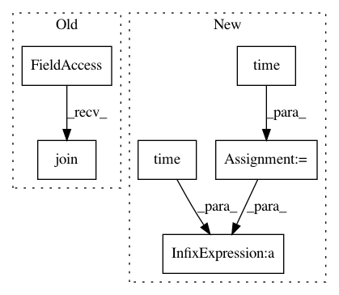

39e8146b3d7354d1e34cd41a4eca19e70c053a4a,dipy/stats/analysis.py,,bundle_analysis,#Any#Any#Any#Any#Any#Any#Any#Any#,169
Before Change
for io in range(n):
mbundles, _ = load_trk(os.path.join(model_bundle_folder, mb[io]))
bundles, _ = load_trk(os.path.join(bundle_folder, bd[io]))
orig_bundles, _ = load_trk(os.path.join(orig_bundle_folder,
org_bd[io]))
mbundle_streamlines = set_number_of_points(mbundles,
nb_points=no_disks)
After Change
t = time()
dt = dict()
//mb = os.listdir(model_bundle_folder)
mb = glob(model_bundle_folder+"/*.trk")
mb.sort()
//bd = os.listdir(bundle_folder)
//bd.sort()
bd = glob(bundle_folder+"/*.trk")
bd.sort()
//org_bd = os.listdir(orig_bundle_folder)
org_bd = glob(orig_bundle_folder+"/*.trk")
org_bd.sort()
n = len(org_bd)
for io in range(n):
mbundles, _ = load_trk(mb[io]) //os.path.join(model_bundle_folder, mb[io]))
bundles, _ = load_trk(bd[io]) //os.path.join(bundle_folder, bd[io]))
orig_bundles, _ = load_trk(org_bd[io])//os.path.join(orig_bundle_folder,
//org_bd[io]))
mbundle_streamlines = set_number_of_points(mbundles,
nb_points=no_disks)
metric = AveragePointwiseEuclideanMetric()
qb = QuickBundles(threshold=25., metric=metric)
clusters = qb.cluster(mbundle_streamlines)
centroids = Streamlines(clusters.centroids)
print("Number of centroids ", len(centroids.data))
print("Model bundle ", mb[io])
print("Number of streamlines in bundle in common space ",
len(bundles))
print("Number of streamlines in bundle in original space ",
len(orig_bundles))
_, indx = cKDTree(centroids.data, 1,
copy_data=True).query(bundles.data, k=1)
//metric_files_names = os.listdir(metric_folder)
metric_files_names = ["fa.nii.gz", "md.nii.gz", "csd_peaks.pam5"]
_, affine = load_nifti(os.path.join(metric_folder, "fa.nii.gz"))
affine_r = np.linalg.inv(affine)
transformed_orig_bundles = transform_streamlines(orig_bundles,
affine_r)
for mn in range(0, len(metric_files_names)):
ind = np.array(indx)
fm = metric_files_names[mn][:-7]
bm = mb[io][14:-4]
print("bm = ", bm)
dt = dict()
metric_name = os.path.join(metric_folder,
metric_files_names[mn])
print("metric = ", metric_files_names[mn])
if metric_files_names[mn][-7:] == ".nii.gz":
metric, _ = load_nifti(metric_name)
dti_measures(transformed_orig_bundles, metric, dt, fm,
bm, subject, group, ind, out_dir)
else:
fm = metric_files_names[mn][:3]
metric = load_peaks(metric_name)
peak_values(bundles, metric, dt, fm, bm, subject, group,
ind, out_dir)
print("total time taken in minutes = ", (-t + time())/60)
def gaussian_weights(bundle, n_points=100, return_mahalnobis=False,
stat=np.mean):
In pattern: SUPERPATTERN
Frequency: 3
Non-data size: 6
Instances
Project Name: nipy/dipy
Commit Name: 39e8146b3d7354d1e34cd41a4eca19e70c053a4a
Time: 2019-08-05
Author: bramshq@gmail.com
File Name: dipy/stats/analysis.py
Class Name:
Method Name: bundle_analysis
Project Name: deepchem/deepchem
Commit Name: 6eeb5043fc94f09fee0e7c0a4c72397af9d7a474
Time: 2016-03-18
Author: enf@vsp-compute-01.stanford.edu
File Name: deepchem/scripts/dock_dude.py
Class Name:
Method Name: dock_ligand_to_receptor
Project Name: ray-project/ray
Commit Name: 06fac785b89239dde039c310db2ee171f44aa776
Time: 2021-01-27
Author: ed.nmi.oakes@gmail.com
File Name: python/ray/serve/tests/test_failure.py
Class Name:
Method Name: test_worker_replica_failure